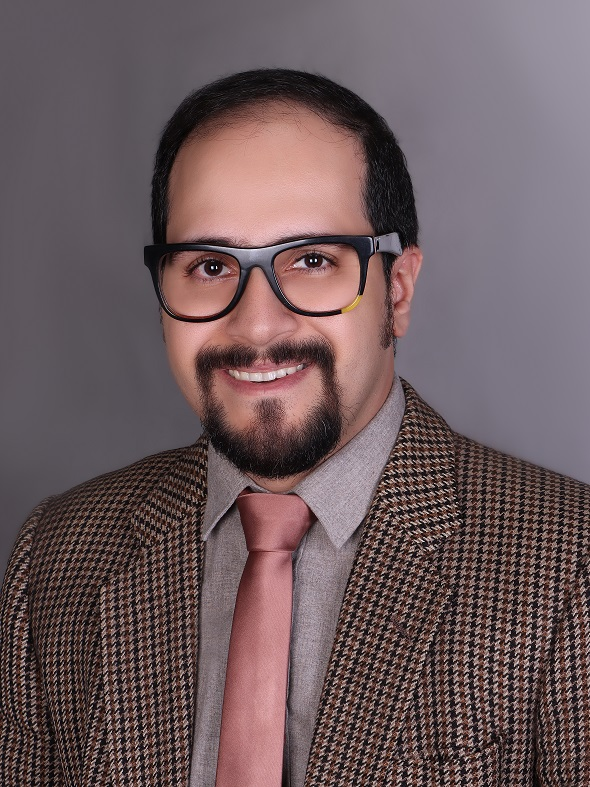

Hello!!
Welcome To My Homepage
I’m an experienced researcher who worked on electrochemical power sources such as batteries and fuel cells, material chemistry and corrosion science. I’m graduated in Master of Science (M.Sc.) focused in material electrochemistry from school of chemistry, college of science, University of Tehran, Tehran, Iran. Some of my previous research projects are about designing a simulation software for PEM fuel cell, data analysis of energy systems (PEM and DB fuel cells), novel active material of Li-ion battery (18650 cells) and inhibition of carbon steel corrosion. At the moment, I joined to the board of directors of Eshtad Energy co. as the managing director (CEO). In Eshtad Energy co. we work on research and development of electrochemical energy storages especially, Li-ion, Ni-Cd, VRLA sealed, traction (PzS, PzB and PzV) & stationary batteries (OPzS, OPzV) and also, battery sales and battery testing equipment marketing (chargers, dischargers and other analysis devices which use in battery manufacturer companies). On the other hand, our company try to provide useful modeling software packages in electrochemical power sources engineering based on machine learning algorithms and data analysis of batteries in Python. In summary, my ultimate goal of this executive position is the designing novel materials and new structures for electrochemical energy storage cells in purpose of enhancement their efficiency, power density and life cycle by the up-to-date practical investigation beside the modern modeling paths with using high technology facilities to create another new generation of batteries.
My Research Interest :
- Electrochemical power sources (Lead-Acid, Li-ion batteries, Fuel cells, cell structure designing and novel active materials)
- Corrosion of materials and protection methods such as Inhibitors, Coating, Anodizing and Cathodic protection.
- Industrial electrochemistry
- Material chemistry (Synthesis and Corrosion)
- Material characterizations (Corrosion and Compounds)
- Chemical simulation, modeling, calculation and computation (Gaussian 03w, Material studio, Battery Design Studio, COMSOL, MATLAB, Python)
- Chemical design, process control and scale-up
Publications :
Papers :
- Experimental Dataset of Electrochemical Efficiency of a Direct Borohydride Fuel Cell (DBFC) with Pd/C, Pt/C and Pd Decorated Ni–Co/rGO Anode Catalysts, ChemRxiv, (2020)
- Dataset of Standard Tests of Nafion 112 Membrane and Membrane Electrode Assembly (MEA) Activation Tests of Proton Exchange Membrane (PEM) Fuel Cell, ChemRxiv, (2020)
- Synthesis, experimental, quantum chemical and molecular dynamics study of carbon steel corrosion inhibition effect of two Schiff bases in HCl solution, Journal of Molecular Liquids, 285 (2019) 626–639
- OPEM : Open Source PEM Cell Simulation Tool, Journal of Open Source Software, 3 (2018) 1–4
Patents :
My Scientific Skills :
- Proficient in many electrochemical techniques, including Cyclic Voltammetry, Impedance, Electrochemical Noise, Polarization Potentiodynamic, Potentiostatic and Galvanostatic measurement.
- Proficient in many electrochemical devices like Autolab metrohm.
- Experienced in synthesis methods of applied material in electrochemistry (nano particles, organic compounds and composites) such as corrosion inhibitors, coatings, electrolytes and electrodes.
- Familiar with a variety of materials characterizations, especially in the analysis of composition, microstructure and morphology, such as SEM, EDS, NMR, TEM, , XRD, FTIR, Raman, TGA, and XPS.
- Familiar with a variety of specific and applied simulation, modeling and calculation software in chemistry and electrochemistry such as Comsol، Battery Design Studio, Matlab، Material Studio، Gaussian، Aspen، Origin Lab، Chemoffice، Experimental Design، Labview، Mathematica.
- Familiar with Python programming language.
- Familiar with a variety of general software such as Microsoft Excel، Microsoft Powerpoint، Origin، Edraw، Adobe Photoshop، Adobe Premier ، Latex، Microsoft Visio.
My Last Scientific and Research Records :
- Experiment and electrochemical measurement on standard cells of fuel cells (Direct Borohydride fuel cell, Proton Exchange Membrane fuel cell) and batteries (cylinder and pouch cell of LiB) by standard test protocol setup and publish the obtained dataset in Data Analytics Laboratory, ECSIM organization, Tehran, Iran.
- Research fellow project “Production of Thermally Expanded Graphite (TEG) by structural improvement of a spherical natural graphite using microwave thermal exfoliation method and electrochemical study on performance and efficiency of TEG as anode in Li-ion full coin cell battery” in University of Tehran, College of Science, School of Chemistry.
- OPEM : Open Source PEM Cell Simulation Tool
- Thesis of M.Sc. degree in applied chemistry at University of Tehran in applied chemistry department, school of chemistry, college of science with subject of “Electrochemical investigation and theoretical study of inhibition effect of synthesized Benzohydrazide derivatives on corrosion of carbon steel in acidic environment” (Under supervision of Dr.Parviz Norouzi, Dr.Shirin Shahabi and Dr.Alireza Shakeri). Also, this subject was documented as an invention with registration number of IR-95239.
- Invention documentation about a research project on pyrolysis processes of “System of KETENE gas production with designing of pyrolysis lamp and process” with registration number of IR-91949 and investigation of technical note with subject of “Ketene Production and Utilization Experimental Study With an Improved Apparatus for its Laboratory Preparation” (Under supervision of Dr.Morteza Mehrdad).
- Construction and investigation on “Lead-Acid Battery as electrochemical motive force for Chem-e-car" and participate in 8th national competition of Chemecar at Iran University of Science and Technology. (Under supervision of Dr.Naz Chaibakhsh).
Some of My Executive Records :
- Chief Executive Officer, member of board of directors and shareholder of particular joint stock company in Electrochemical power sources “Eshtad Energy Fanavar” Tehran, Iran.
- Research assistant at electrochemical analysis laboratory in Center of Excellence in Electrochemistry, school of Chemistry, college of science, University of Tehran, Tehran, Iran.
- Managing director, member of board of directors and shareholder of particular joint stock company in chemical “Sorena Shimi Pars (Prochemex)” Tehran, Iran.
- Member of the board of directors and collaborate with “Chemistry Group" at institute of innovation and technology “Zarin Marlik Caspian”, Rasht, Iran.
My Other Skills and Interests :
- Professional freelance, documentary and street photography and videography.
- I’m interested in watching movie, listening to music especially rock, reading short story books and football playing.
Contact Me?


Generated 2022-12-03 By